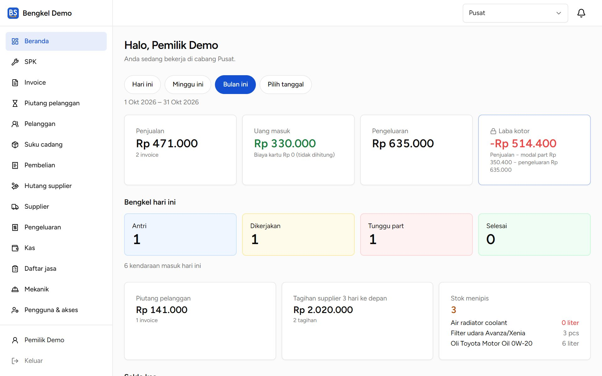
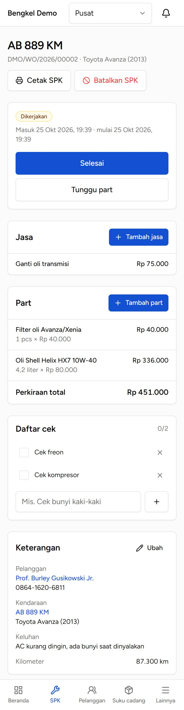
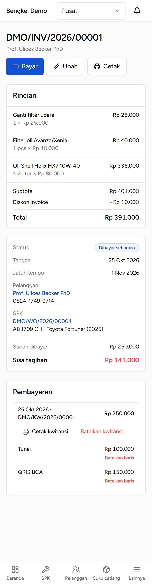
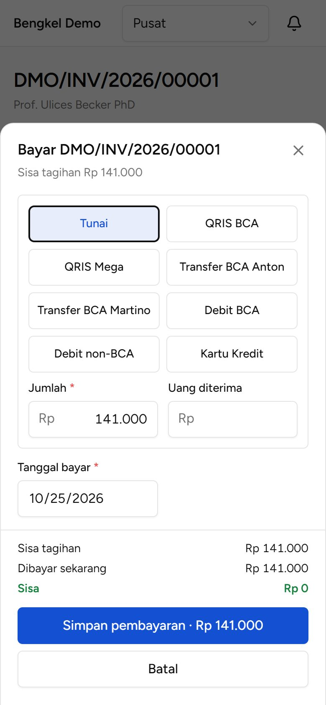
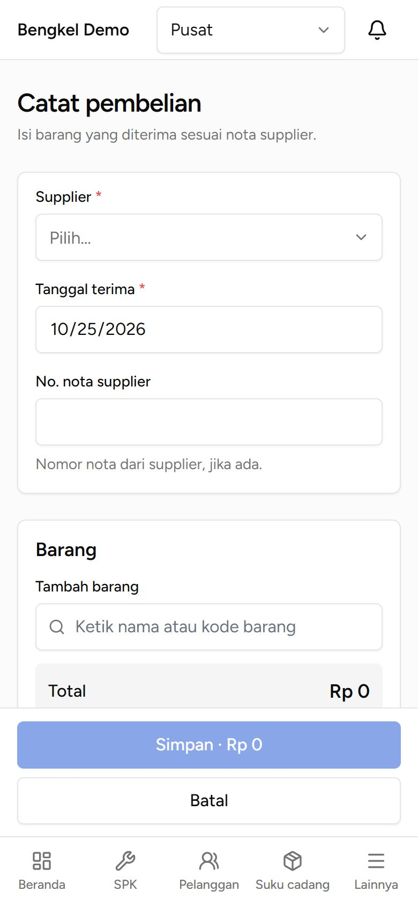
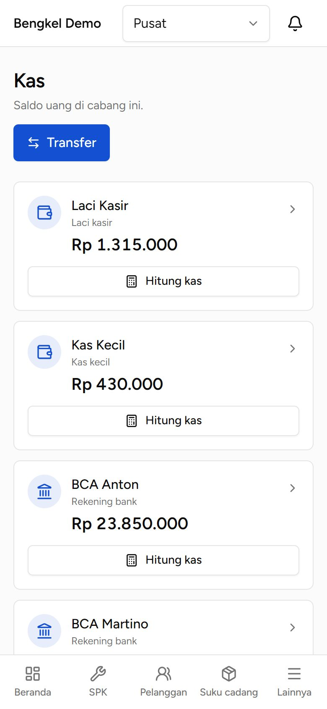
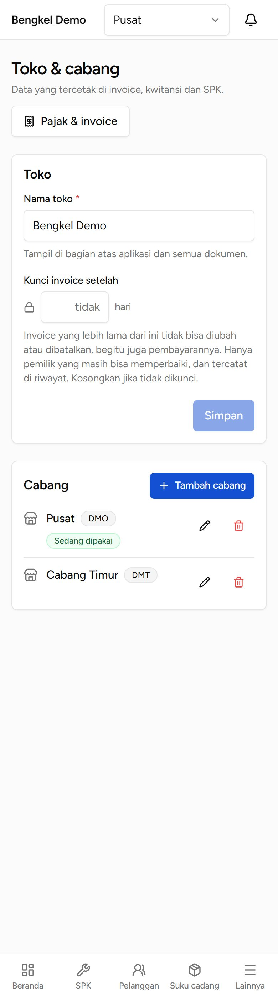

Cara memakai BengkelSync sehari-hari: dari kendaraan masuk, SPK, invoice dan pembayaran, sampai stok, kas, dan pengaturan bengkel.
Admin DepanKeuanganGudangKepala CabangPemilik

Daftar isi
Klik judul untuk langsung ke bagian itu
Panduan ini interaktif: setiap judul di bawah bisa diklik, dan setiap halaman punya tautan ↑ Daftar isi untuk kembali ke sini. Di pembaca PDF, daftar bagian juga ada di panel Bookmark.
Catatan
Menu dan tombol yang tampil berbeda untuk setiap peran. Kalau sebuah menu atau tombol tidak terlihat, berarti peran Anda tidak punya akses ke situ. Minta Pemilik mengubahnya bila perlu (lihat bagian 11).
Part yang dipakai di SPK langsung mengurangi stok. Uang yang diterima langsung menambah saldo akun kas. Sisa tagihan masuk ke Piutang pelanggan. Barang dari supplier menambah stok, dan yang belum dibayar masuk ke Hutang supplier.
SPK menjadi Ditagih saat invoice dibuat, dan Ditutup otomatis saat invoice lunas.
Selama dikerjakan
Mekanik → Atur: pilih mekanik yang mengerjakan.
+ Tambah jasa: pilih dari Daftar jasa atau ketik sendiri, lalu isi harganya.
+ Tambah part: pilih barang dan jumlahnya.
Daftar cek: pekerjaan yang bisa dicentang satu per satu.
Tombol status di atas: Kerjakan, Tunggu part, Selesai.
Riwayat servis: servis kendaraan ini sebelumnya, termasuk di cabang lain.
Stok
Stok langsung berkurang saat part disimpan di SPK, dan kembali bila part dihapus. Barang yang stoknya habis tidak bisa dipakai.
Membatalkan SPK
Batalkan SPK (alasan wajib) hanya bisa sebelum invoice dibuat. Part yang sudah dipakai kembali ke stok.

Halaman SPK yang sedang dikerjakan
Daftar SPK
Menu SPK menampilkan semua kendaraan yang sedang ditangani. Saring dengan tombol status (Aktif, Antri, Dikerjakan, …) atau cari plat nomor, nomor SPK, atau nama pelanggan.
Setelah SPK berstatus Selesai, tekan Buat invoice.
Jasa dan part terisi otomatis dari SPK. Di Jasa & biaya, nama, jumlah, harga, dan diskon bisa diubah; jasa yang tidak ditagih bisa dihapus, dan jasa di luar Daftar jasa atau Biaya lain bisa ditambahkan. Part dari SPK tetap dengan jumlah di SPK; Nama di invoice, harga, dan diskon bisa diubah.
Tekan Simpan invoice. SPK berubah menjadi Ditagih.
Tekan Cetak. Invoice berukuran A5, cocok untuk kertas 2 ply.
Bila pajak dinyalakan di Pajak & invoice, pajak dihitung otomatis.
Memperbaiki invoice
Tekan Ubah, perbaiki baris yang salah, isi alasan, lalu Simpan perubahan.
Nomor invoice tetap. Versi lama tersimpan di Riwayat perubahan.
Admin Depan hanya bisa mengubah invoice yang belum ada pembayarannya; invoice yang sudah dibayar diubah oleh Keuangan.
Total baru tidak boleh lebih kecil dari yang sudah dibayar.

Invoice yang baru dibayar sebagian
Penjualan langsung (tanpa SPK)
Untuk pembeli yang hanya membeli barang, misalnya oli atau aki.
Buka Invoice → Penjualan langsung.
Pilih Pelanggan umum bila data pembeli tidak perlu dicatat, atau Pilih pelanggan.
Tambahkan part, jasa, atau biaya lain, lalu simpan. Stok langsung berkurang.
Nama part di invoice
Setiap part punya kolom Nama di invoice yang boleh diubah, mis. "Aki kering 45Ah (garansi 1 tahun)". Stok tetap mengikuti barang aslinya. Kosongkan untuk memakai nama barang.
Membatalkan invoice
Batalkan invoice (alasan wajib) hanya bisa bila tidak ada pembayaran yang masih berlaku; batalkan pembayarannya dulu. Invoice dari SPK: SPK kembali ke Selesai dan bisa ditagih lagi. Penjualan langsung: part kembali ke stok.
Pilih metode: Tunai, transfer, QRIS, kartu, dll. Untuk beberapa metode sekaligus, tekan Metode lain.
Isi Jumlah. Untuk tunai, isi Uang diterima; kembalian dihitung otomatis.
Metode tertentu wajib diisi No. referensi. Kartu kredit bisa dikenai Biaya kartu di atas tagihan.
Bila belum lunas, isi Jatuh tempo sisa. Sisanya masuk ke Piutang pelanggan.
Tekan Simpan pembayaran, lalu Cetak kwitansi bila diminta.
Melunasi kemudian
Saat pelanggan kembali, buka invoice-nya (atau lewat Piutang pelanggan) dan tekan Bayar lagi. Metodenya boleh berbeda. Setelah lunas, SPK otomatis Ditutup.

Bayar dengan satu atau beberapa metode
Piutang pelanggan
Semua invoice yang belum lunas, diurutkan dari jatuh tempo terdekat, dengan total piutang dan yang sudah lewat jatuh tempo. Pengingat muncul di lonceng 3 hari sebelum dan saat lewat jatuh tempo.
Membatalkan pembayaran (Keuangan)
Di bagian Pembayaran pada invoice: Batalkan baris untuk satu metode, atau Batalkan kwitansi untuk semuanya. Alasan wajib.
Tidak ada yang dihapus: pembayaran tetap terlihat dengan tanda BATAL, uangnya keluar lagi dari akun kas, dan jumlahnya kembali menjadi sisa tagihan.
Pilih Supplier (bisa diketik), Tanggal terima, dan No. nota supplier.
Tambahkan barang sesuai nota: jumlah dan harga beli.
Pilih bayar sekarang, sebagian, atau nanti, lalu Simpan. Stok langsung bertambah.
Admin Depan
Boleh Lunasi sekarang dari kas hanya bila lunas, dibayar dari laci kasir atau kas kecil, dan tidak melebihi batas bayar tunai cabang (bawaan Rp 500.000). Selebihnya dicatat sebagai hutang dan dibayar oleh Keuangan.

Catat pembelian
Hutang supplier
Menampilkan pembelian yang belum lunas, dengan tanda Lewat jatuh tempo, Dibayar sebagian, atau Belum dibayar.
Tekan Bayar, pilih akun Dibayar dari dan jumlahnya. Boleh dicicil.
Pembayaran atau pembelian yang salah dibatalkan dengan alasan; stok dan kas ikut disesuaikan.
Tambah barang: nama, kode, merek, satuan, harga beli dan harga jual, serta batas stok minimum. Satuan liter, meter, dan kg boleh desimal (mis. 4,2 liter).
Kas menampilkan saldo setiap akun (Laci Kasir, Kas Kecil, rekening bank). Ketuk akun untuk melihat Riwayat.
Transfer: memindahkan uang antar akun, mis. mengisi kas kecil dari laci kasir atau menyetor ke bank.
Hitung kas: isi jumlah uang yang benar-benar ada; selisihnya dicatat dengan alasan. Dipakai juga untuk saldo awal.
Laci kasir dan kas kecil tidak bisa minus; saldo bank boleh minus.

Saldo kas per akun
Pengeluaran
Buka Pengeluaran → Catat pengeluaran.
Pilih Kategori, tulis Keterangan dan Jumlah, lalu pilih akun Dibayar dari.
Tambahkan Foto nota langsung dari kamera HP, lalu Simpan.
Pengeluaran yang salah: Batalkan (alasan wajib); uangnya kembali ke akun kas.
Admin Depan hanya dari kas, sampai batas bayar tunai cabang.
Kategori diatur Pemilik dan Keuangan. Kategori Gaji & bonus hanya terlihat oleh Pemilik.
Saran
Bayar gaji dari rekening bank. Pengeluaran dari laci kasir tetap terlihat sebagai uang keluar oleh orang yang bisa melihat kas, walau keterangannya disembunyikan.
Nama toko: tampil di atas aplikasi dan di semua dokumen.
Kunci invoice setelah … hari: invoice yang lebih lama tidak bisa diubah atau dibatalkan, begitu juga pembayarannya, kecuali oleh Pemilik. Perubahan oleh Pemilik ditandai Diubah setelah periode dikunci. Pembayaran baru untuk invoice lama tetap bisa diterima.
Cabang
+ Tambah cabang (Pemilik): nama, Kode (2–6 huruf/angka, dipakai di nomor dokumen, mis. KLM/INV/2026/00001), alamat, telepon, NPWP, Zona waktu (WIB/WITA/WIT), dan Logo. Cabang baru otomatis mendapat Laci Kasir, Kas Kecil, dan metode Tunai; stok mulai dari nol.
Ubah (ikon pensil): Pemilik untuk semua cabang, Kepala Cabang untuk cabangnya sendiri. Kode tidak bisa diubah setelah cabang mengeluarkan dokumen pertama.
Hapus (ikon tempat sampah, Pemilik): ditolak bila masih ada SPK terbuka, invoice belum lunas, hutang supplier, atau saldo kas. Cabang yang sudah punya data tidak dihapus datanya, hanya disembunyikan, dan bisa dikembalikan dengan Pulihkan.

Toko & cabang
Pajak & invoice (per cabang)
Tagih pajak di invoice: nyalakan bila cabang memungut pajak, lalu isi nama dan tarif (mis. PPN 11%).
Harga Sudah termasuk pajak atau Belum termasuk pajak.
Catatan kaki invoice: mis. nomor rekening, garansi servis, atau ucapan terima kasih.
Perubahan hanya berlaku untuk invoice baru; invoice lama tidak berubah.
Akun kas & pembayaran
Akun kas dan rekening bank, metode pembayaran (beserta biaya kartu dan kewajiban no. referensi), serta batas bayar tunai untuk Admin Depan.
Invoice, pembayaran, pembelian, dan pengeluaran yang salah dibatalkan dengan alasan. Catatannya tetap ada, sehingga semuanya bisa ditelusuri.
Setiap perubahan tercatat
Siapa, kapan, dan apa yang diubah.
Stok dan kas hanya berubah lewat transaksi
SPK, invoice, pembelian, pembayaran, pengeluaran, koreksi stok, dan hitung kas. Kalau angkanya tidak cocok, pakai Koreksi stok atau Hitung kas dengan alasan yang jelas.
Mencetak
Tombol cetak membuka jendela cetak browser. Pilih ukuran kertas A5. Untuk menyimpan sebagai PDF, pilih printer Simpan sebagai PDF.
Pesan merah
Baca isinya: biasanya menjelaskan aturan yang mencegah perubahan, mis. stok tidak cukup atau invoice sudah dikunci.
Akun ini hanya ada di aplikasi demo untuk latihan, bukan di bengkel yang sudah berjalan. Semua akun demo memakai kata sandi password1.
Email
Peran
Cabang
owner@demo.test
Pemilik
Semua cabang
manager@demo.test
Kepala Cabang
Pusat dan Cabang Timur
frontdesk@demo.test
Admin Depan
Pusat
finance@demo.test
Keuangan
Pusat
warehouse@demo.test
Gudang
Pusat dan Cabang Timur
Bengkel demo bernama Bengkel Demo dengan dua cabang, Pusat dan Cabang Timur. Isinya contoh SPK di setiap status, invoice yang dibayar sebagian dengan dua metode, pembelian, pengeluaran, dan barang yang stoknya menipis. Semua nama dan data di demo (dan di gambar panduan ini) adalah fiktif.
Coba sebagai peran lain
Masuk dengan frontdesk@demo.test atau finance@demo.test untuk melihat menu yang tampil bagi peran itu.
Lampiran B. Daftar istilah
SPK (Surat Perintah Kerja)
Catatan satu kunjungan kendaraan: keluhan, jasa, part, mekanik.
Invoice
Tagihan kepada pelanggan, dari SPK atau penjualan langsung.
Kwitansi
Bukti pembayaran; satu kwitansi bisa berisi beberapa metode bayar.
Piutang pelanggan
Tagihan pelanggan yang belum lunas.
Hutang supplier
Pembelian dari supplier yang belum dibayar lunas.
Pelanggan umum
Pembeli langsung yang datanya tidak perlu dicatat.
Laci Kasir
Uang tunai di meja kasir.
Kas Kecil
Uang tunai untuk belanja kecil sehari-hari.
Hitung kas
Menyamakan saldo di sistem dengan uang yang benar-benar ada.
Koreksi stok
Menyamakan stok di sistem dengan barang di rak (stok opname).
Kunci invoice
Invoice lama tidak bisa diubah lagi, kecuali oleh Pemilik.